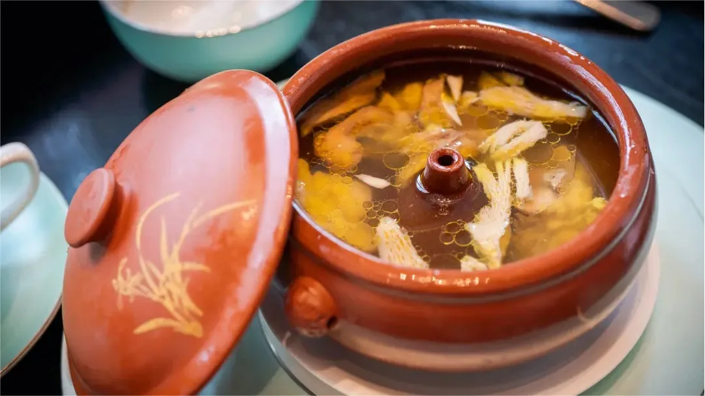

Top 3 Food in Kunming
Crossing the Bridge Noodles (Guoqiao Mixian)

Introduction
Crossing the Bridge Noodles is Yunnan’s most famous dish—named after a local legend (a wife crossed a bridge to bring hot soup to her husband studying on an island). It consists of a bowl of boiling-hot chicken broth (topped with a layer of oil to keep it warm), fresh ingredients (sliced chicken, beef, shrimp, bean sprouts, and noodles), and condiments (chili oil, sesame paste). The ritual is part of the fun: you add the raw ingredients to the hot broth tableside—they cook quickly in the boiling liquid—and then mix in noodles and condiments. Kunming’s version uses fresh, local ingredients (e.g., Yunnan rice noodles) and a clear, savory broth that highlights the ingredients’ natural flavors.
Taste
Broth: Clear, savory, and rich (made with chicken, pork bones, and herbs); stays hot long enough to cook the ingredients.
Ingredients: Sliced chicken is tender, shrimp is sweet, and bean sprouts add crunch; rice noodles are chewy and absorb the broth.
Condiments: Chili oil adds mild heat, while sesame paste adds creaminess—balancing the broth’s savoriness.
Overall: Hearty, fresh, and interactive—every bite is full of Yunnan’s local flavor.
Preparation Method
1. Make the Broth: Simmer 1kg chicken bones, 500g pork bones, 3 slices of ginger, and 2 scallions in 2L water for 3 hours. Strain the broth, add 1 tsp salt, and keep it boiling hot.
2. Prep Ingredients: Slice 100g chicken breast, 50g beef, and 50g shrimp into thin pieces. Wash 100g bean sprouts, 50g spinach, and 200g fresh rice noodles. Arrange ingredients on separate plates.
3. Serve the Soup: Pour the boiling broth into a large bowl, add a thin layer of vegetable oil (to retain heat). Bring the bowl and plates to the table.
4. Cook & Mix: Add raw ingredients (chicken, beef, shrimp, vegetables) to the broth first (cook 1–2 minutes), then add noodles. Stir in chili oil and sesame paste to taste.
Price
Local Restaurants:25–45 CNY/bowl (includes broth, all ingredients, and condiments).
Famous Shops (e.g., “Old Kunming Crossing the Bridge Noodles”): 55–75 CNY/bowl (uses premium chicken and organic vegetables).
Street Stalls:15–25 CNY/bowl (simpler version, great for a quick lunch).
Steam Pot Chicken (Zheng Guo Ji)

Introduction
Steam Pot Chicken is a classic Kunming dish—tender chicken steamed in a special ceramic steam pot (with a hollow tube in the center, allowing steam to circulate and condense into broth). It’s a simple but elegant dish that highlights the chicken’s freshness: no heavy seasonings, just chicken, ginger, and a few Yunnan herbs (e.g., “snow lotus herb” for aroma). The steam pot traps the chicken’s juices, creating a clear, flavorful broth that’s both nourishing and delicious. In Kunming, it’s often served in restaurants as a main course, paired with steamed rice or local vegetables. It’s perfect for those who prefer milder flavors but still want to taste Yunnan’s local ingredients.
Taste
Chicken: Tender, juicy, and mild—falls off the bone easily; no dry or tough bits.
Broth: Clear, light, and savory—full of chicken’s natural flavor, with a hint of herbal aroma from Yunnan herbs.
Overall:Nourishing, fresh, and comforting—ideal for a light dinner or when you want to avoid spicy food.
Preparation Method
1. Prep the Chicken: Clean 1 whole local chicken (1kg), cut into 8 pieces. Blanch in boiling water for 2 minutes to remove blood, then rinse with cold water.
2. Arrange in Steam Pot: Place the chicken pieces in a ceramic steam pot. Add 3 slices of ginger, 1 tsp salt, and a small handful of Yunnan snow lotus herb (or goji berries as a substitute).
3. Steam: Put the steam pot in a larger pot (fill the larger pot with water up to ½ the steam pot’s height). Cover and steam over low heat for 2.5–3 hours (the longer, the more tender the chicken).
4. Serve: Carefully transfer the steam pot to a serving tray (it will be hot). Skim off any excess oil from the surface of the broth (optional). Serve hot, with the chicken pieces and broth in the steam pot—let guests scoop their own portions.
Price
Local Restaurants:68–98 CNY/serving (uses a 1kg local chicken, enough for 2–3 people).
High-end Yunnan Restaurants: 108–158 CNY/serving (uses free-range “plate chicken” and rare Yunnan herbs for extra aroma).
Home-Style Eateries: 58–78 CNY/serving (simpler version, with goji berries instead of snow lotus herb).
Rose Cake (Meigui Gao)

Introduction
Rose Cake is a beloved sweet snack in Kunming—made with fresh rose petals (from Kunming’s famous rose gardens), glutinous rice flour, and sugar. Kunming’s mild climate makes its roses extra fragrant and sweet, which gives the cake a natural floral aroma. The cake has a soft, slightly chewy texture and a delicate rose flavor—sweet but not cloying, with no artificial additives. It’s usually steamed or baked, and often shaped into small rounds or squares for easy eating. You’ll find it at dessert shops, flower markets, and street stalls—locals buy it as a snack, a gift, or a sweet ending to a meal. It’s a perfect way to taste Kunming’s “spring-like” charm in a bite.
Taste
Texture: Soft, slightly sticky (like mochi but lighter), and tender—melts in your mouth slowly.
Flavor: Fresh, natural rose aroma; sweet with a subtle floral tang (no artificial rose syrup taste).
Overall: Fragrant, delicate, and refreshing—ideal for afternoon tea or a post-meal treat.
Preparation Method
1. Prep Rose Petals: Pick 100g fresh Kunming rose petals (remove stems and green parts), rinse gently, and pat dry. Mix with 50g sugar and let sit for 1 hour (to release rose juice and fragrance).
2. Make the Batter: In a large bowl, mix 200g glutinous rice flour, 30g low-gluten flour, 60g sugar, and 200ml warm water. Stir until smooth, then fold in the sweetened rose petals (and their juice).
3. Steam the Cake: Grease a 20cm round cake pan with oil. Pour the batter into the pan, smooth the top, and sprinkle a few extra rose petals on top. Steam over high heat for 25–30 minutes (insert a toothpick—if it comes out clean, the cake is done).
4. ServeLet the cake cool for 10 minutes, then cut into small pieces. Serve warm or chilled—chilling enhances the rose flavor.
Price
Street Stalls/Dessert Shops: 5–8 CNY/piece (small round cake, ~50g).
Flower Markets: 25–40 CNY/box (8–10 pieces, packaged with fresh rose buds as a gift).
High-end Pastry Shops: 12–18 CNY/piece (uses organic roses and premium flour, with a more delicate texture).